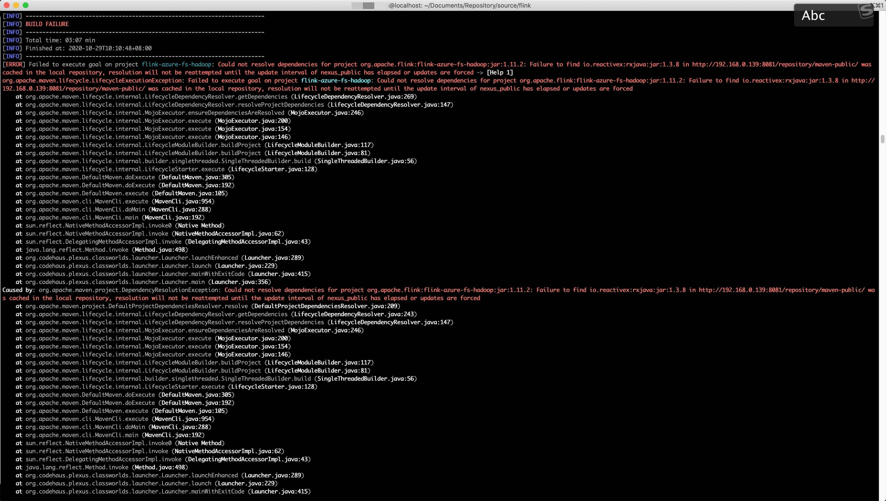
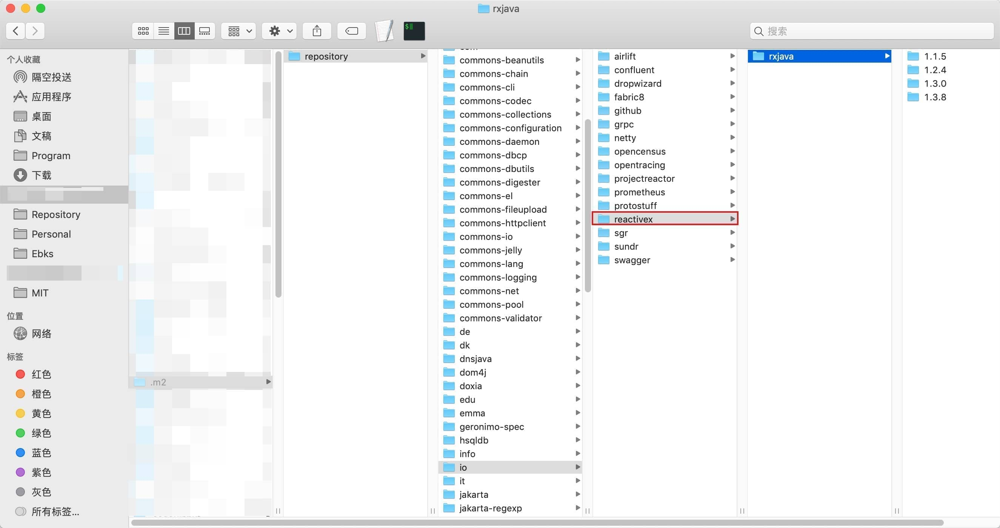
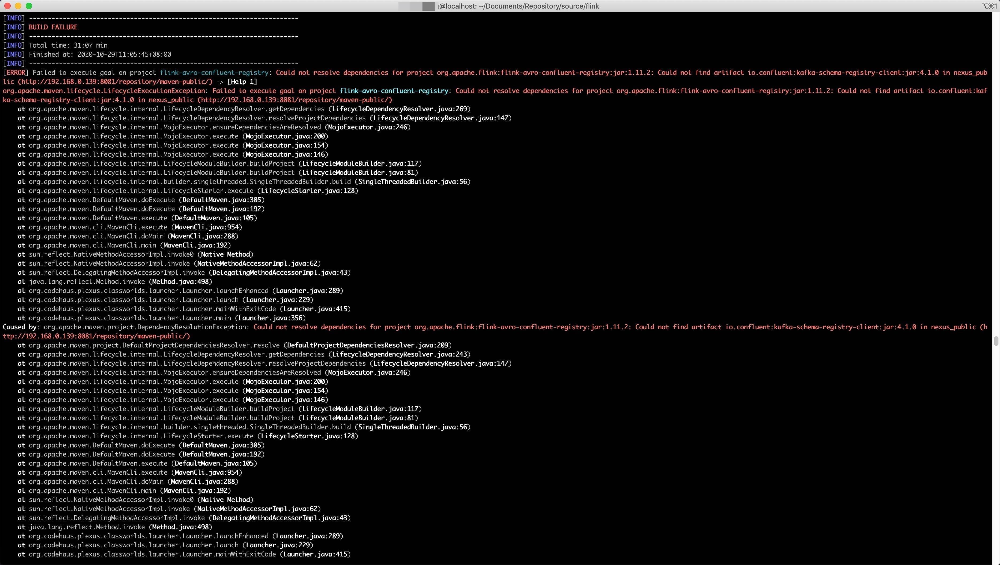
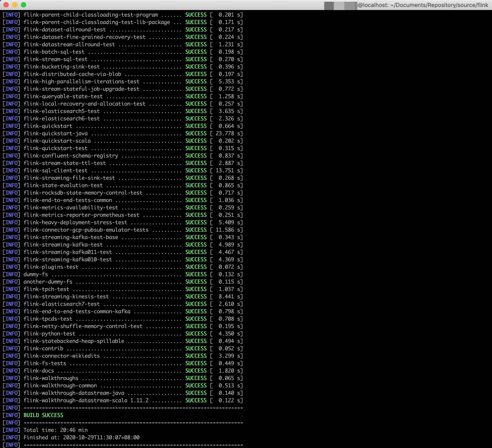

Flink源码编译
本文最后更新于：2020年10月30日 上午
Flink 源码编译
环境
仅记录编译遇到的两个问题
版本
flink-tag-1.11.2
jdk-1.8.0_251
scala-2.12.11
apache-maven-3.5.4
编译
git clone git@github.com:apache/flink.git
cd flink
git checkout -b xxx release-1.11.2-rc1
mvn clean package -DskipTests -e问题
- 依赖包下载失败，需要重新获取

[ERROR] Failed to execute goal on project flink-azure-fs-hadoop: Could not resolve dependencies for project org.apache.flink:flink-azure-fs-hadoop:jar:1.11.2: Failure to find io.reactivex:rxjava:jar:1.3.8 in http://192.168.0.139:8081/repository/maven-public/ was cached in the local repository, resolution will not be reattempted until the update interval of nexus_public has elapsed or updates are forced -> [Help 1]
org.apache.maven.lifecycle.LifecycleExecutionException: Failed to execute goal on project flink-azure-fs-hadoop: Could not resolve dependencies for project org.apache.flink:flink-azure-fs-hadoop:jar:1.11.2: Failure to find io.reactivex:rxjava:jar:1.3.8 in http://192.168.0.139:8081/repository/maven-public/ was cached in the local repository, resolution will not be reattempted until the update interval of nexus_public has elapsed or updates are forcedflink-azure-fs-hadoop 模块的依赖 jar 包 io.reactivex:rxjava:jar:1.3.8 未下载完全，因为本地有缓存，编译时不会重新拉取，手动删除如下图的目录，重新编译下载即可。

- 库中缺少依赖包，需手动下载

[ERROR] Failed to execute goal on project flink-avro-confluent-registry: Could not resolve dependencies for project org.apache.flink:flink-avro-confluent-registry:jar:1.11.2: Could not find artifact io.confluent:kafka-schema-registry-client:jar:4.1.0 in nexus_public (http://192.168.0.139:8081/repository/maven-public/) -> [Help 1]
org.apache.maven.lifecycle.LifecycleExecutionException: Failed to execute goal on project flink-avro-confluent-registry: Could not resolve dependencies for project org.apache.flink:flink-avro-confluent-registry:jar:1.11.2: Could not find artifact io.confluent:kafka-schema-registry-client:jar:4.1.0 in nexus_public (http://192.168.0.139:8081/repository/maven-public/)点击此处下载：http://packages.confluent.io/maven/io/confluent/kafka-schema-registry-client/4.1.0/
重新编译即可。
最终编译完成，直接通过 IDEA 导入

本博客所有文章除特别声明外，均采用 CC BY-SA 4.0 协议 ，转载请注明出处！